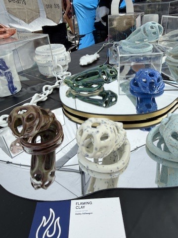
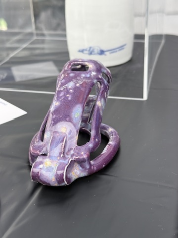
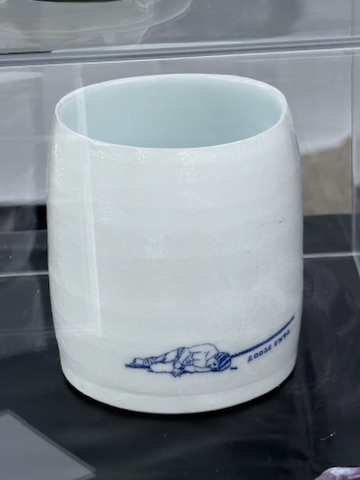
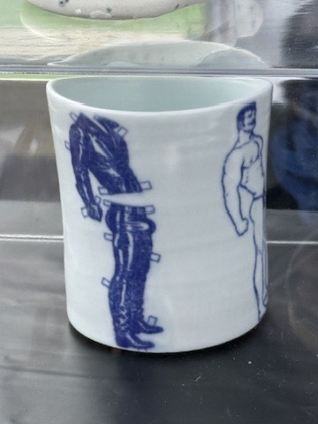
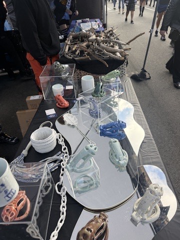
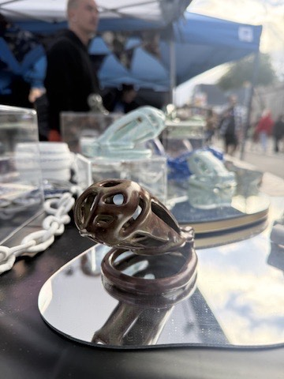

Collection
Folsom Collection
As a young, biracial, brown queer, I struggled to find my place in the gay community. Traditional leather bars like The Eagle and The Bike Stop became welcoming spaces for me, where people of different races, sexualities and ages gathered around a shared rejection of traditional gay identities and celebrated their otherness. My relationship to that community has evolved over time, but I have always admired that world, and the art that comes out of it, for being alternative on its own terms. It fundamentally shaped my design and artistic tastes.
In July, I began a ceramics residency in Jingdezhen focused on porcelain. Just as those bars had been a safe space for discovering my queer identity, I found myself returning to that world as my way into this new medium. I was drawn to using a material as fragile as porcelain to explore a subject as traditionally serious as bondage. The theme became the avenue for me to explore mold making, slip casting, throwing and gas reduction firing, and working within it gave the work a constraint that let me finish a thematic collection by the end of the residency. The result is a mix of Chinese porcelain and American stoneware, brought together around that theme.
These pieces either sold at the Folsom Street Fair in 2026 or will be available online in October 2026.